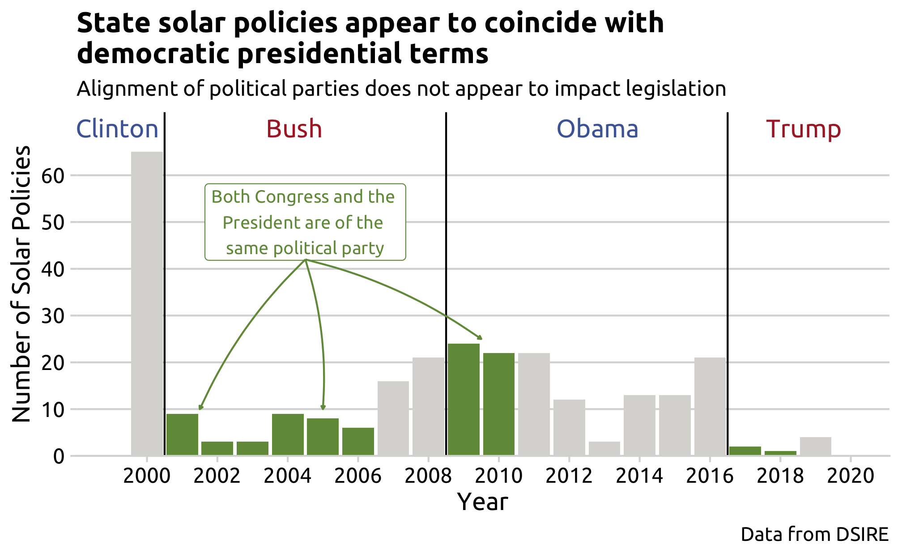
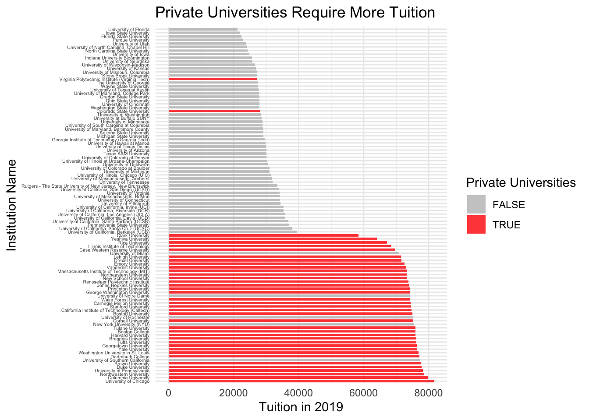
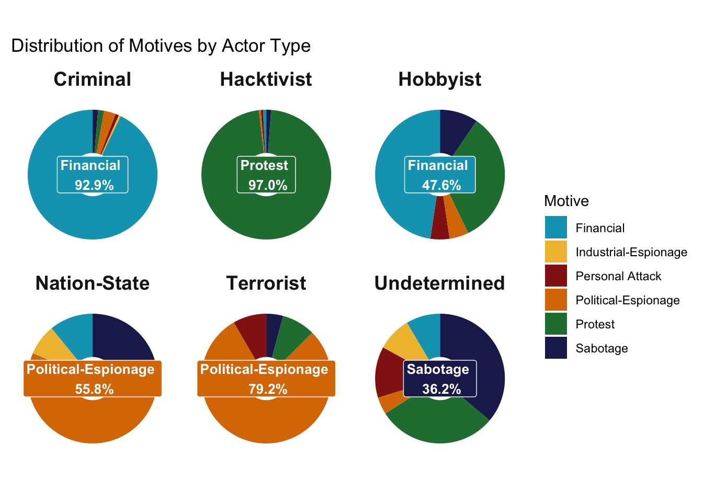

Spring 2020
World War…against COVID-19
by Javier Langarica

FEMA Disaster Relief
by Derek Ripp, Blake Ripp, & Bugra Kardas
Gender Representation in the Film Industry
by Sarah Cassway, Alexa Solomon, & Caroline Walton
OPEC vs US: Who controls the narrative of global petroleum market
by Azamat Kulzhanov, Diing Manyang, & Alp Can
Analysis of Home Mortgage Disclosure Act Data
by Alyssa Cristobal
Game Attendance in Major League Baseball
by Saramarie Puzzanghera
Votings Trends in the 2016 Virginia Presidential Election
by Jennifer J. Kim
Spring 2021

Would you get into an autonomous vehicle?
by Leah Kaplan
üóëÔ∏è Janitor Award winner for messiest data cleaning üéâ
Genders in the Workforce
by Alexa Rosdahl, Katie Fagan, and Gabriel Bahia De Sousa
✨ Shiny Award winner for best individual data viz üéâ
NFL Suspensions
by Ebunoluwa Akinbode, Kyara McDowell, and Kareemot Siyanbola
Poverty and its Implications on Energy Use and Carbon Emissions
by Kazi Asifa Ashrafi, Michael O’Keefe, and Eliese Ottinger
Fall 2022
CO2 Offset Project Investigation
by Abdallah Omari, Majd Shatara, Mansour Alhawwas, and Sebastian Makrides
College Completion Rates by Race, Gender, and US States
by Ivanna Hidalgo, Natasha Stallings, Lauren Monk, and Kidist Bekele
Relationship between Covid 19 pandemic and the income equality among states
by Jiyoon Koo, Amaya Walker, and Sahand Salemi
üóëÔ∏è Janitor Award winner for messiest data cleaning üéâ
DC Vehicle Crashes
by Ben Buechner, Parker Reese, Max Feng, and Vijay Jayamani
✨ Shiny Award winner for best individual data viz üéâ

Fighting for Gold: Ranking in the Premier League
by Karim Rizk, Ryan Cedeno, Amen Dahab, and Marvin Castillo
Fall 2023

Cuban’s Migration
by Sabina Pereira, Federica Negron, and Marena Marzari
Parking Violations in Washington DC
by Arsema Demeke, Kaitlyn Frost, Amna Maqsood, and Lola Nurullaeva
Market Pricing Strategies for Different Brands of Mobile Phones
by Ji Qi (祁绩) and Zeyu Cheng (程泽宇)
From Past to Present: Analyzing Key Economic Metrics and the Shadows of Recessions
by Nishanth Nandakumar and Sai Kiran Reddy Vellanki
✨ Shiny Award winner for best individual data viz üéâ

Advancements in Solar and Wind Energy in the USA
by Pingfan Hu and Abbey Kollar
The Trends, Spatial Difference, and Associated Outcome of Smoking
by Kejia Hu and Jiaxin Wang
Ukraine After 21 Months
by Bogdan Bunea, Ian Milko, Collin Schwab, and Rayyan Hussien
üóëÔ∏è Janitor Award winner for messiest data cleaning üéâ

Paying for Prestige: Analysis of University Rankings
by Ayomide Ojo, Sahale Reese, Benyat Yimaj, and Youssouf Toure
Fall 2024
Air Sciencia: Evaluating Airline Performance
by Sasha Green, Arman Naseh, Jake Anszelowicz, and Amine Louri
Car Bloat in the United States: Do Americans have an obsession with big vehicles?
by Ifeoluwa Olaniyan and Emmanuel Agbeko

Evolving Trends in Cyber Events: Insights from a Decade of Data
by Annie Goodman and Etiene Effiong
✨ Shiny Award winner for best individual data viz üéâ
Changes in the European Energy Market due the Russia-Ukraine War
by Gavin Ulrich and Byeonghun Kwon
Assessing EV accessibility and affordability in the United States
by Daniel Fisher and Zain Hoda
Global Energy Analysis: How do countries achieve economic growth while maintaining low energy intensity?
by Angel Ho and Easha Rajalaxmi Vivesh
Understanding Movie Performance Through Data: Financial Trends, Ratings, and Profitability from TMDB and Rotten Tomatoes
by Ibrahim Ahmed and Paul Asamoah Boadu
Cracking The NCAA Team Rankings Code: The Attributes of the Best NCAA Football Playoff Teams Over a Decade
by Kyla Rounsoville, Maddie Wilson, and Alana Lee
üóëÔ∏è Janitor Award winner for messiest data cleaning üéâ
Understanding Traffic Crashes in New York City
by Ali Irtaza and Tarun Kumanduri
Analyzing Olympic Success: Analyzing the Correlation Between Medal Count and Socioeconomic Factors
by Hannah Hodge, Sandy Alksninis, Jedidiah Bechtel, and Aedan Bayhan